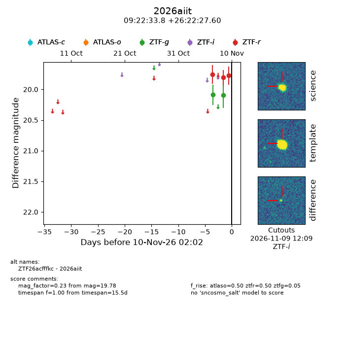
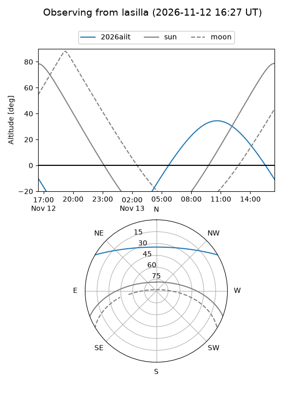
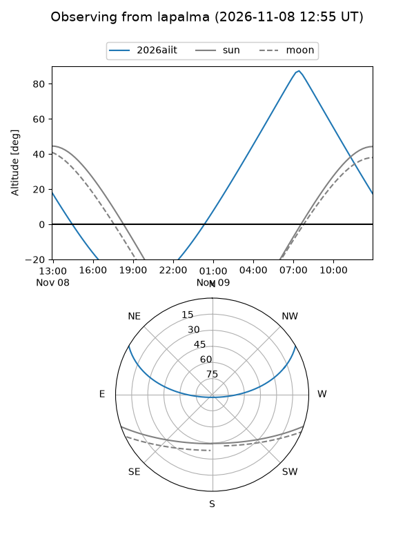
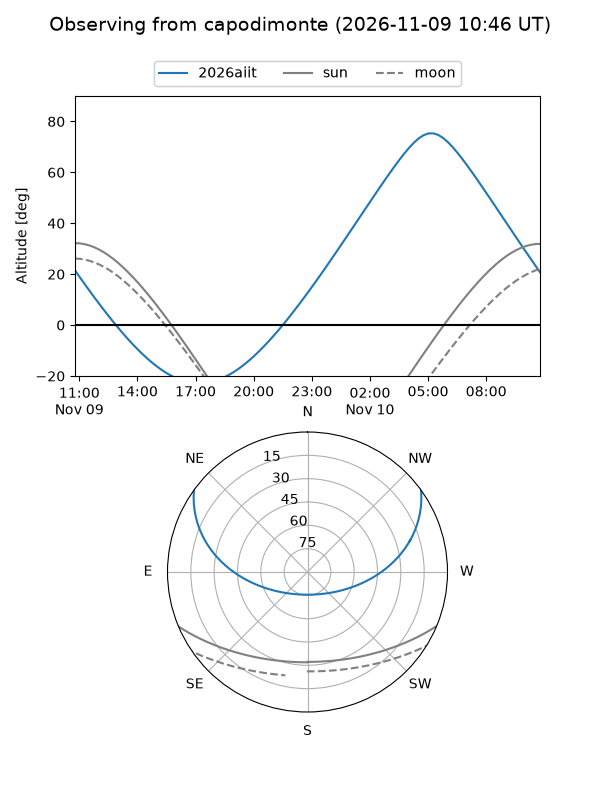
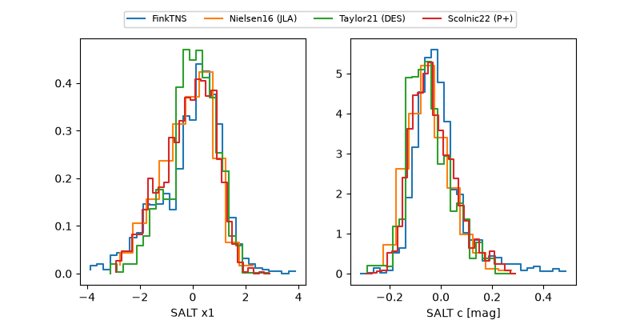

2026aiit
Target 2026aiit at 2026-11-10 02:04
Aliases and brokers:
FINK-ZTF: ztf.fink-portal.org/ZTF26acfffkc
Lasair-ZTF: lasair-ztf.lsst.ac.uk/objects/ZTF26acfffkc
ALeRCE-ZTF: alerce.online/object/ZTF26acfffkc
YSE-PZ: ziggy.ucolick.org/yse/transient_detail/2026aiit
TNS name: wis-tns.org/object/2026aiit
Direct TNS query: direct search
alt names
ZTF26acfffkc (ztf,fink_ztf)
2026aiit (tns,yse)
Coordinates:
equatorial (ra, dec) = 140.6408,+26.37433
equatorial (HMS+DMS) = 09:22:33.79,+26:22:27.60
galactic (l, b) = (201.3526,+43.71403)
Flags:
peak dt:
Photometry:
last atlaso=nan, ztfg=20.09, ztfr=19.78
1 atlaso, 2 ztfg, 3 ztfr detections
Lightcurve

Visibility



Additional plots
